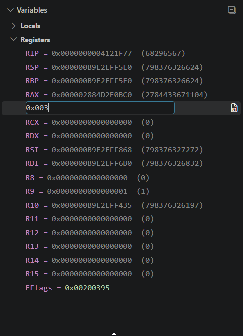
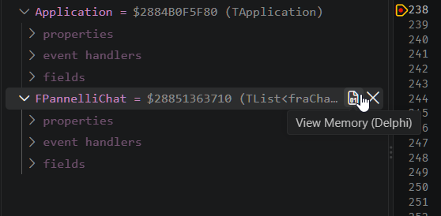
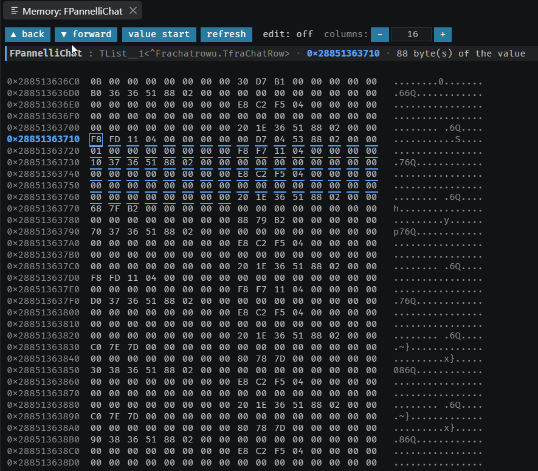

7. Registers, memory and disassembly
Three views for when the source-level picture has run out: a module without debug information, a crash inside the RTL, a value that is wrong before any of your code touched it.
Registers
A dedicated registers scope, readable and writable, named for the bitness of the target rather than the bitness of the adapter:
| Target | Registers shown |
|---|---|
| x64 | RIP, RSP, RBP, RAX–RDI, R8–R15, EFlags |
| x86 | EIP, ESP, EBP, EAX–EDI, EFlags — no R8–R15 |

RAX is being edited in place — the same inline text box every other
editable value in the Variables panel uses.Writing a register on a 64-bit target accepts either the 32-bit or the 64-bit spelling, and the value returned afterwards is re-read from the thread rather than echoed back — so what you see is what the write actually achieved.
The memory view
The extension ships its own memory panel, View Memory (Delphi), because the stock VS Code hex pane cannot do three things that matter when you are chasing a corrupted structure: scroll to before a value’s start address, show where a value begins and ends, and show what changed.
- Reads at negative offsets, so you can look at what sits in front of a buffer.
- Marks the exact byte extent of the value you opened it on.
- Flashes the bytes that changed since the previous stop.
- Writes individual bytes, behind an explicit toggle rather than by accident.
Opening it
Three ways in, and which one you get depends on what the row knows about itself:
- From a Variables or Watch row — the usual route, via the inline icon described above. The row already carries an address.
- From a Watch row with no address — the expression is evaluated first, then the view opens on the result.
-
From nothing — run the command with no row selected and it asks for an
expression, suggesting the shapes it accepts: a variable, a field path, or
@Recfor an address.
One pane per value per session: asking for the same variable again reveals the pane you already have rather than stacking another. All of them close when the session ends.
Moving around
| Control | What it does |
|---|---|
| ▲ back / ▼ forward | Scroll by a page |
| value start | Jump back to the value’s own address |
| refresh | Re-read now, and mark what changed since the last time you looked |
| edit: off / edit: ON | Arms byte editing — see below |
| − / number / + | Bytes per row. Match it to a 2D array’s row width and the block reads as one. |
| Mouse wheel | One row; hold Shift for a page |
Scrolling backwards past the start is the point of the thing, not an accident: a string’s length header sits four bytes before its characters, a dynamic array’s eight before its elements.
Reading the colours
Four marks, and they mean different things — telling them apart is most of the value of the view:
| Mark | Meaning |
|---|---|
| Blue underline | This byte belongs to the value you opened the view on. Nothing is underlined when the extent could not be established — deliberately, so the view never claims a neighbouring variable’s bytes are yours. |
| Blue box, and the row’s address in blue | Offset zero — the variable’s own address. |
| Orange flash, fading to orange text | Changed since the last comparison point. The flash fades after a few seconds but the text stays orange until the next comparison, so a change you looked away from is still there when you look back. |
Grey ?? |
Not readable at that address. |
If the value moves — a string reallocated, an object freed and rebuilt — the pane notices on the next refresh, retargets to the new address and says so in its header.
Writing a byte
- Click edit: off so it reads edit: ON.
- Click the byte and type over it — one or two hex digits,
0xallowed. -
Press
Enter, or simply click away: both commit. PressEscapeto abandon the edit and restore the byte.
Anything that is not a byte is refused by name — "zz" is not a byte (expected
00..FF) — and a write the debuggee rejects reports that too. Unreadable
?? cells never become editable in the first place.
Open it from the hover icon on a row in the Variables or Watch view — an inline icon at the right-hand end of the row, not an entry in the right-click menu.

delphi-win64.stockMemoryView to true to get it back alongside
this one — which is also the only remaining reason to keep the Hex Editor extension
installed.

FPannelliChat’s own address. No byte has changed since the last
comparison point here, so the orange flash this section describes above is not visible in
this particular capture.The Disassembly View
Real x86 and x64 decoding, through a bundled Zydis, symbolicated against the loaded
modules: each instruction is labelled with the nearest function and an offset, plus the
source file and line wherever the line table has one. Bytes that do not decode are shown
honestly as db XX rather than as a plausible-looking instruction.
This is also where address breakpoints are set.
Disassembling backwards from an address is refused unless it can be done correctly. x86 instructions are variable-length, so scanning backwards is guesswork: starting one byte off produces a completely different, entirely plausible instruction stream. Instead, the view looks for a known boundary — a function start, an export entry, or a nearer line boundary — and decodes forward from it. If forward decoding from that boundary does not land exactly on the target address, the view says so rather than showing you fiction.
Screenshot: the Disassembly View with the current-instruction marker and a symbolicated function+offset label.
tutorial-07-disassembly-view.png)When the symbols run out
A stop at an address with no source — OS code, a module built without debug information, an address the debug info does not cover — does not go silent, and it does not leave you staring at an empty editor either. A document opens, containing:
- the address, and the module it belongs to;
- why there is no source — the module has no debug information, the symbols are still being indexed, the address is not covered by the symbols it does have, or the module is not known at all — each with what to do about it;
- the disassembly around the stop: a few proven instructions before the current one and a good stretch after, each labelled with the nearest function and offset, and with a source file and line wherever the line table has one — which is often how you discover that the frame below you does have source.
That last point is the reason this exists rather than a blank screen. A stop in the RTL or in a package built without symbols is not a dead end; it tells you where you are and what is nearby, and from there instruction stepping gets you out.
"noSourcePlaceholder": false in the launch configuration to turn the whole
mechanism off.
Screenshot: the document that opens on a stop with no source — the address and module header, the stated reason, and the annotated disassembly below it.
tutorial-07-no-source.png)From there, instruction-granularity stepping (see chapter 2) is what moves you forward, since it needs no line table at all.